🌿 Ainu Herbal — Edukasi Kesehatan & Pengobatan Herbal Alami
Kumpulan panduan kesehatan berbasis edukasi medis dan ikhtiar pengobatan herbal murni dari akarnya. Mulai dari gangguan lambung hingga berbagai keluhan kesehatan sehari-hari.
📲 Konsultasi WA Resmi: 0852-8674-7289
1. GERD: Bukan Sekadar Maag, Ini Masalah Katup Lambung yang Longgar
GERD: Dada terasa panas terbakar seperti mau serangan jantung, padahal baru selesai makan malam?

2. Gastritis: Kenapa Ulu Hati Terasa Perih Seperti Diiris saat Perut Kosong
Gastritis: Ulu hati perih melilit, mual, dan langsung begah padahal baru makan tiga suap?
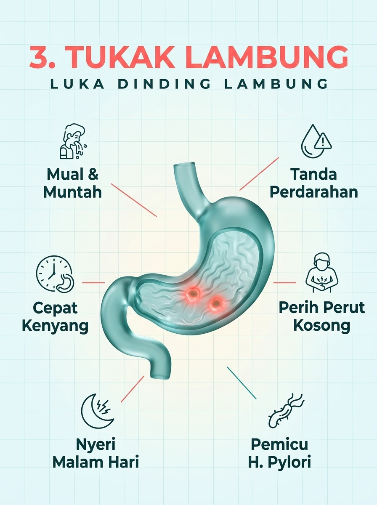
3. Tukak Lambung: Saat Radang Biasa Sudah Berubah Jadi Luka Terbuka
Tukak Lambung: Pernah terbangun tengah malam karena perut bagian atas terasa perih seperti ditusuk, lalu membaik sebentar setelah makan biskuit atau min...

4. Dispepsia Fungsional: Hasil Endoskopi Normal, Tapi Perut Selalu Begah dan Perih
Dispepsia Fungsional: Sudah periksa ke dokter, bahkan hasil USG atau endoskopi menunjukkan lambung bersih tanpa luka, tapi perut tetap terasa cepat penu...

5. Silent Reflux (LPR): Asam Lambung Naik Tanpa Panas di Dada, Serangnya ke Tenggorokan
Silent Reflux (LPR): Sering mendehem setiap pagi, suara tiba-tiba serak, tenggorokan terasa seperti ada lendir atau sesuatu yang mengganjal, tapi dadamu...

6. Gastroparesis: Saat Otot Lambung Bekerja Melambat dan Makanan Tertahan Berjam-jam
Gastroparesis: Makan siang jam 12, tapi sampai jam 5 sore perut masih terasa penuh sekali seolah makanannya belum turun sama sekali?
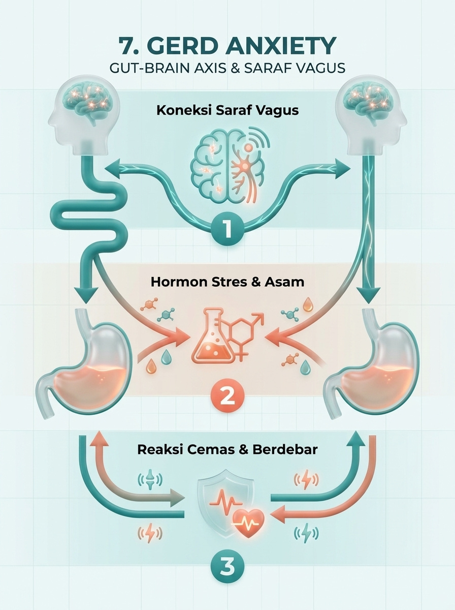
7. GERD Anxiety: Kenapa Pikiran Stres Bisa Bikin Lambung Bergejolak dan Jantung Berdebar
GERD Anxiety: Begitu stres kerja menumpuk atau kurang tidur, perut langsung perih, dada sesak, lalu muncul panik karena takut terjadi sesuatu pada jantung?

8. Hernia Hiatus: Ketika Bagian Atas Lambung Ikut Terdorong Naik Menembus Diafragma
Hernia Hiatus: Sudah menjaga makan dan minum obat rutin, tapi asam lambung tetap mudah naik setiap kali membungkuk atau berbaring telentang?
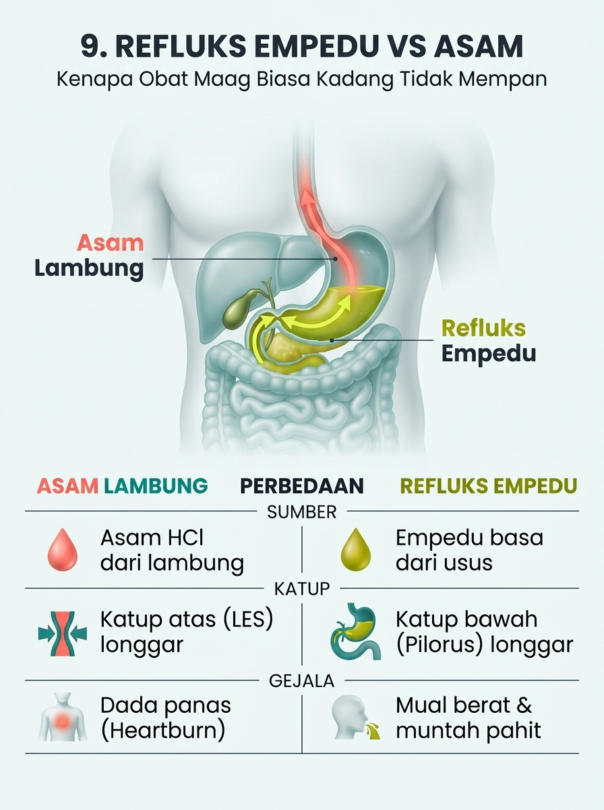
9. Refluks Empedu: Kenapa Rasa Pahit dan Perihmu Tidak Mempan Obat Asam Lambung Biasa
Refluks Empedu: Sudah minum obat penekan asam lambung sesuai anjuran, tapi perut atas masih terasa panas dan mulut sering merasakan cairan pahit berwarn...
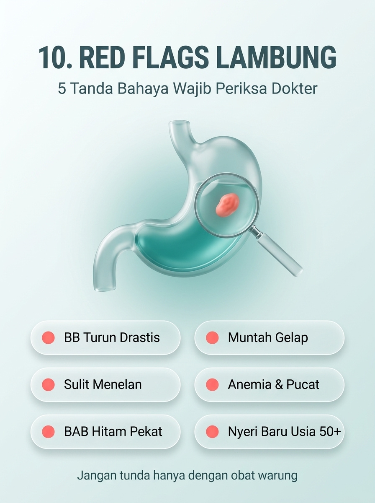
10. Red Flags Lambung: 5 Tanda Bahaya yang Tidak Boleh Lagi Ditunda dengan Obat Warung
Sebagian besar keluhan lambung memang bisa mereda dengan perbaikan pola makan dan obat yang tepat. Namun, mengandalkan obat penahan perih berbulan-bulan...
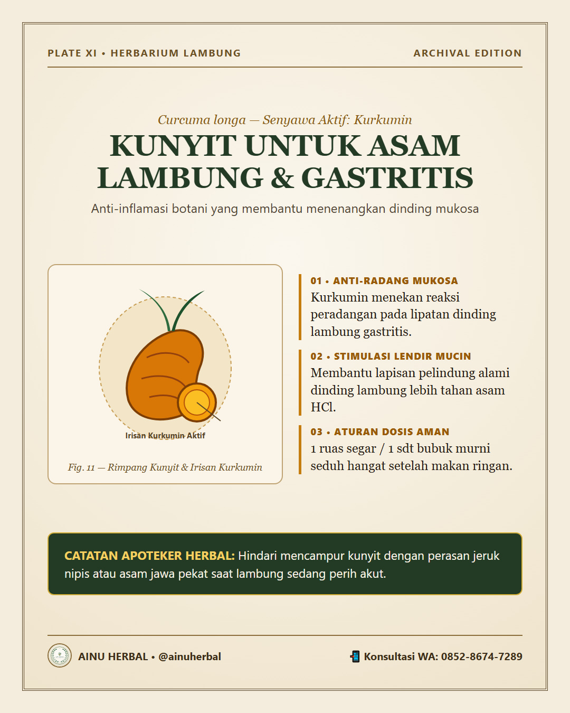
Kunyit (Kurkumin) untuk Asam Lambung & Gastritis: Cara Kerja & Dosis Aman
Kunyit untuk Asam Lambung: Kenapa rimpang kuning ini jadi herbal paling banyak diteliti untuk meredakan gastritis dan perih ulu hati?
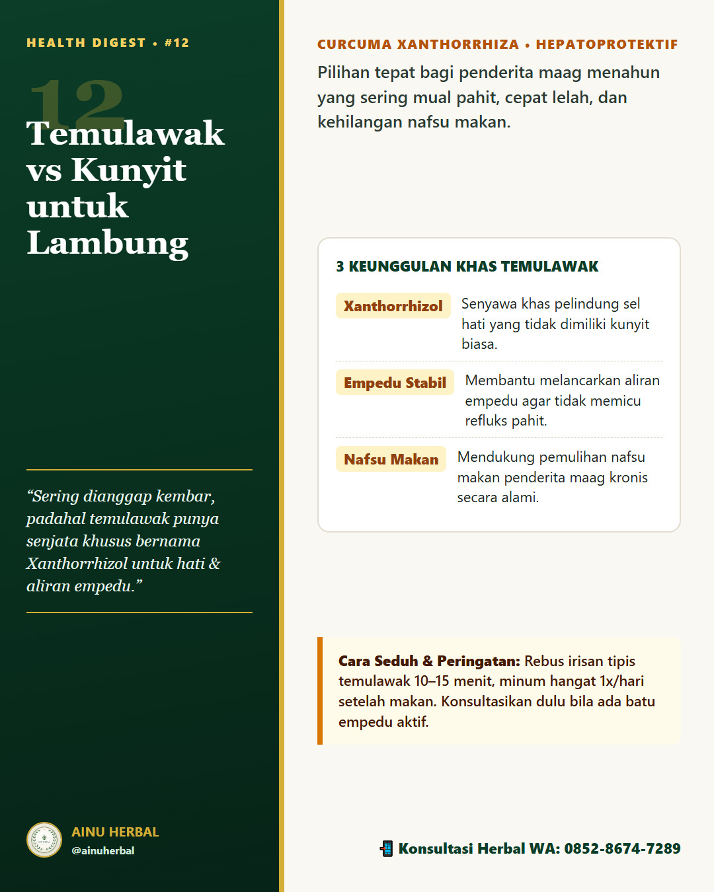
Temulawak untuk Pemulihan Mukosa Lambung & Refluks Empedu: Bedanya dengan Kunyit
Temulawak untuk Lambung: Sering dianggap sama persis dengan kunyit, padahal temulawak punya keunggulan khusus untuk pemulihan mukosa lambung dan keluhan...

Pati Garut (Irut) — Pelapis Alami Dinding Lambung Perih & Tukak Lambung
Pati Garut (Irut): Kenapa bubur umbi tradisional ini sering jadi penyelamat pertama saat ulu hati perih melilit atau tukak lambung kambuh?

Lidah Buaya (Aloe Vera) untuk Meredakan Dada Panas GERD: Cara Olah Aman
Lidah Buaya untuk GERD: Gel bening Aloe vera dikenal mampu menyejukkan iritasi kerongkongan dan dada panas, TAPI banyak orang justru mulas karena salah ...
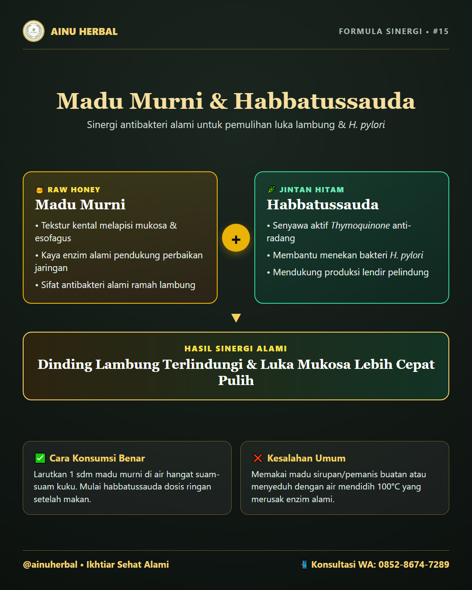
Madu Murni & Habbatussauda untuk Luka Lambung & H. pylori: Cara Konsumsi Benar
Madu Murni & Habbatussauda: Kombinasi dua bahan alami ini sudah lama diteliti karena sifat antibakteri dan anti-radangnya yang mendukung pemulihan luka ...
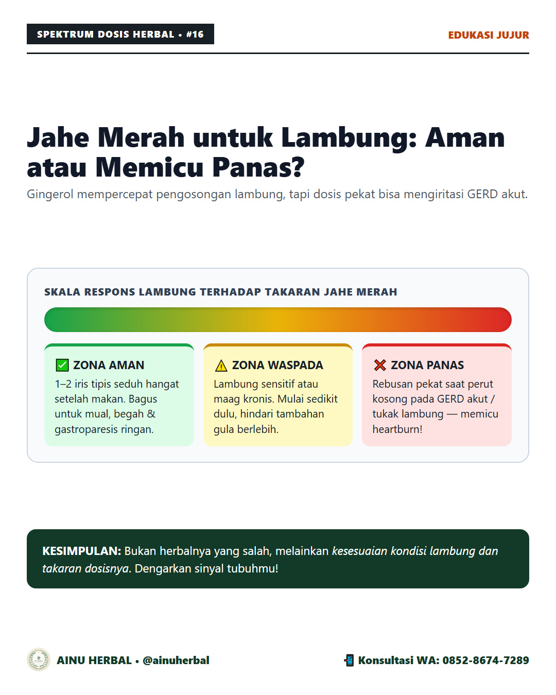
Jahe Merah untuk Lambung: Kapan Aman & Kapan Justru Memicu Dada Panas?
Jahe Merah untuk Lambung: Ada yang langsung lega setelah minum wedang jahe, tapi ada juga penderita GERD yang dadanya malah terasa makin panas. Kenapa b...

Gamat (Teripang Emas) & Kolagen Alami untuk Regenerasi Luka Dinding Lambung
Gamat (Teripang Emas): Mengapa ekstrak biota laut ini populer sebagai pendamping pemulihan luka dinding lambung dan gastritis erosif?
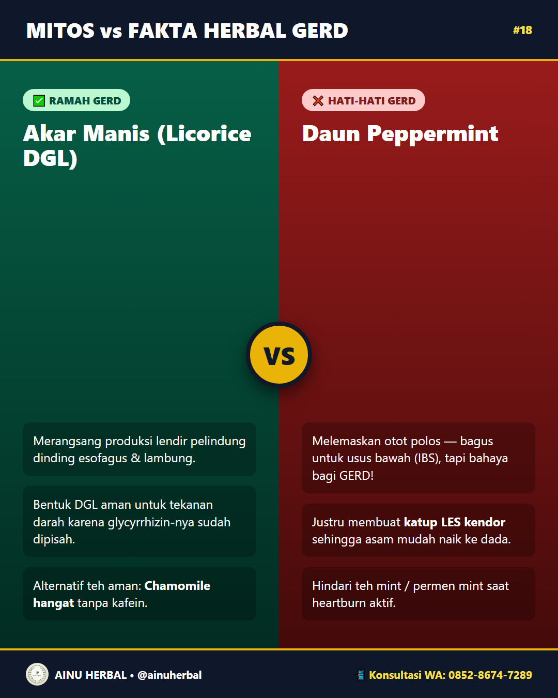
Akar Manis (Licorice / DGL) vs Daun Peppermint untuk GERD: Mitos vs Fakta
Akar Manis vs Daun Peppermint: Banyak penderita GERD minum teh peppermint supaya perut terasa adem, tapi 30 menit kemudian dada malah terasa makin panas...
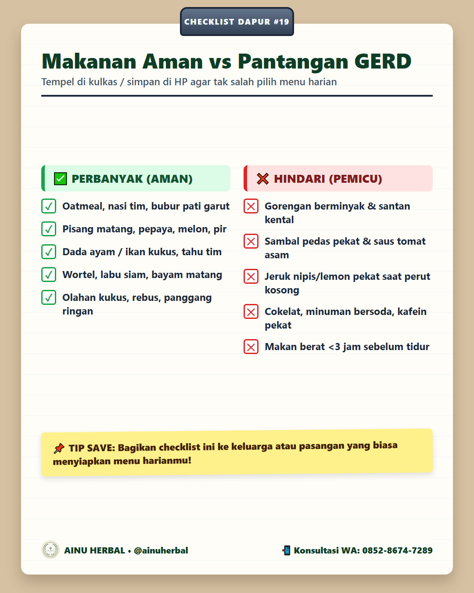
Daftar Makanan Aman vs Pantangan Wajib Penderita GERD & Maag Kronis
Makanan Aman vs Pantangan GERD: Obat dan herbal sebagus apa pun akan bekerja setengah hati kalau setiap hari lambung masih digempur makanan pemicu asam ...

Posisi Tidur Sunnah untuk Asam Lambung: Hikmah Miring Kanan & 3 Adab Anti-Refluks
Posisi Tidur Sunnah untuk Asam Lambung: Bagaimana menyelaraskan tuntunan tidur miring kanan sesuai Hadits Rasulullah ﷺ dengan kesehatan lambung agar beb...

Menu Sarapan & Jadwal Makan Ideal untuk Lambung Sensitif (Pola Porsi Kecil Sering)
Menu Sarapan & Jadwal Makan Lambung Sensitif: Lambung bermasalah membenci dua kondisi ekstrem — **terlalu lama kosong** dan **terlalu penuh mendadak**.

Aturan Minum Kopi, Teh & Air Hangat bagi Penderita Asam Lambung
Aturan Minum Kopi Asam Lambung: Wajibkah penderita maag dan GERD berhenti minum kopi seumur hidup?
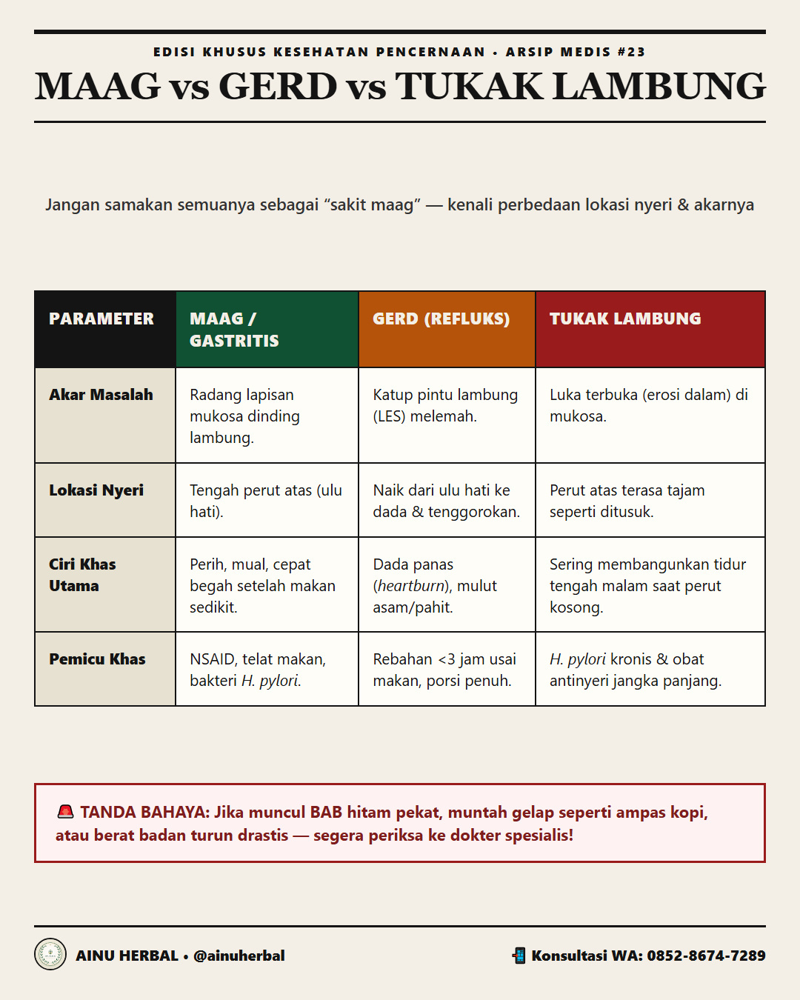
Beda Maag Biasa vs GERD vs Tukak Lambung: Tabel Perbandingan Gejala Lengkap
Beda Maag Biasa vs GERD vs Tukak Lambung: Di Indonesia semua nyeri perut atas sering dipukul rata jadi "sakit maag". Padahal penanganan ketiganya berbeda!

Kenapa Asam Lambung Sering Kambuh Malam Hari & Subuh? 4 Langkah Pencegahannya
Kenapa Asam Lambung Sering Kambuh Malam Hari & Subuh? Padahal siangnya terasa baik-baik saja, begitu tengah malam dada tiba-tiba sesak, panas, atau terb...
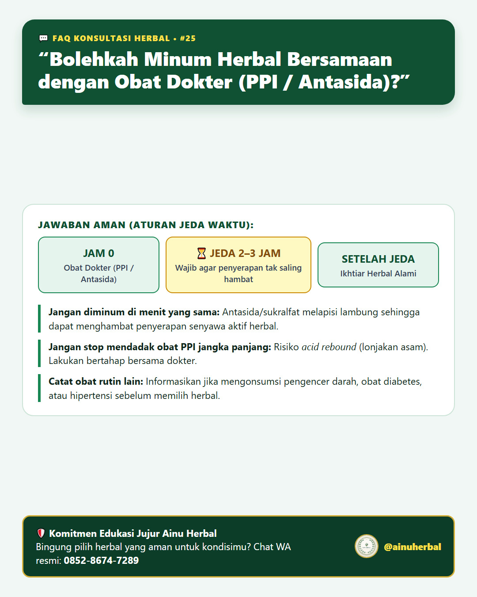
FAQ Herbal Lambung: Bolehkah Minum Herbal Bersamaan dengan Obat Dokter (PPI/Antasida)?
Bolehkah Minum Herbal Bersamaan dengan Obat Dokter? Ini pertanyaan paling sering masuk ke konsultasi Ainu Herbal — dan jawabannya wajib dipahami dengan ...